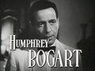

Humphrey Bogart as Rick Blaine.

Humphrey DeForest Bogart (December 25, 1899 ¨C January 14, 1957)
was an American screen actor who, with performances in films during the
1940s such as The Maltese Falcon, Casablanca, and The Big Sleep, became
widely regarded as a cultural icon. In 1999, the American Film
Institute ranked Bogart as the greatest male star in the history of American cinema.
Ingrid Bergman as Ilsa Lund.
Ingrid Bergman (29 August 1915 ¨C 29 August 1982) was a
Swedish actress who starred in a variety of European and American films.
She won three Academy Awards, two Emmy Awards, four Golden Globe Awards
and the Tony Award for Best Actress. She is ranked as the fourth greatest
female star of American cinema of all time by the American Film Institute.
She is best remembered for her roles as Ilsa Lund in Casablanca (1942),
a World War II drama co-starring Humphrey Bogart, and as Alicia Huberman
in Notorious (1946), an Alfred Hitchcock thriller co-starring Cary Grant.